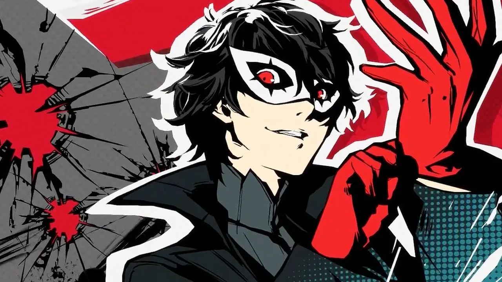

Sobre o jogo
Persona 5 é um RPG da Atlus que saiu em 2016 no Japão e em 2017 no resto do mundo. Jogamos com um estudante que se muda para Tóquio e que, de dia, tem de ir às aulas e fazer amigos, mas à noite entra num mundo paralelo chamado Metaverso.
Junto com os amigos forma os Ladrões Fantasma, um grupo que entra na mente de pessoas corruptas para lhes roubar o coração e obrigá-las a confessar o que fizeram.

O que mais gosto
- A banda sonora cheia de jazz e rock
- O estilo visual a vermelho e preto
- As batalhas por turnos com as Personas